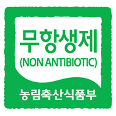
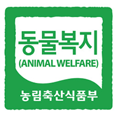

지금 회원가입시 바로 사용가능한 5천원 할인 쿠폰이 발급됩니다.
5,900원
3,540원 40% 할인정보
| 원산지 | 상세설명참조 |
| 보관방법 | 냉장보관 |
| 배송정보 | 일반배송 |
| 인증정보 |


|
| 수량 | |
냉장고에 꼭 구비해두는 기본 아이템, 바로 우유일거예요. 온 가족 건강을 위한 동물복지 우유를 ORGA에서 만나보세요.
지정 목장에서 목초를 먹고 자란 젖소의 원유를 사용하고, 동물복지와 무항생제 인증을 받아 더욱 안심하고 즐길 수 있답니다.
고온 순간 살균(HTST) 공법을 사용해 더욱 고소하고 풍부한 맛의 올가 우유로 매일의 영양을 챙겨보세요.
행복한 소가 건강한 우유를 만들고 건강한 우유가 행복한 사람을 만들죠.
올가 동물복지 목장우유는 천안 신대진 목장에서 착유한 원유만 사용했어요.
한 마리당 33㎡ 이상의 활동 공간을 보장한 건강한 사육 환경에서 목초를 먹고 자란 젖소의 우유랍니다.
젖소의 사육 환경을 철저히 관리해 스트레스로부터의 자유를 포함한 동물복지 5대 가치를 준수했어요.
동물복지, 무항생제 인증을 동시에 받아 안심하고 드실 수 있답니다.
체세포수는 젖소의 건강 상태, 세균수는 원유의 위상 상태를 나타내는 지표예요.
ORGA 동물복지 목장우유는 체세포수, 세균수 모두 최고 등급을 받았답니다.
등급으로 증명된 안전하고 고소한 우유를 온 가족과 건강하게 즐겨보세요.
냉장실에 보관하시고 개봉 후에는 유통기한 이내라도 가급적 빨리 드세요.
※ 본 기술서의 관능 표현과 사용, 보관 등 추천의 내용은 사용자나 적용 환경에 따라 달라질 수 있습니다.
| 제품명 | 동물복지 목장 우유 900ml |
|---|---|
| 식품의 유형 | 우유 |
| 생산자 및 소재지 (수입품의 경우 생산자, 수입자 및 제조국) |
상품 상세 정보를 참고하세요. |
| 제조연월일/소비기한 또는 품질유지기한 | 제조연월일 : 사업자가 실물상품의 제조연월일을 일일이 추적∙관리하기 어려운 상품입니다. 제조연월일은 실물상품에 표기되어 있습니다. 소비기한 : 제조연월일로부터 14일까지 / 상품 발송일을 기준으로 소비기한이 4일 이상 남은 제품이 배송됩니다. (단, 2023년까지 생산/제조한 제품의 경우 유통기한으로 표시 된 제품이 배송될 수 있습니다.) |
| 포장단위별 내용물의 용량(중량), 수량 | 900ml/EA |
| 원재료명 및 함량 (농수산물의 원산지 표시에 관한 법률에 따른 원산지 표시 포함) | 상품 상세 정보를 참고하세요. |
| 영양성분 (영양성분 표시대상 식품에 한함) | 상품 상세 정보를 참고하세요. |
| 유전자변형식품 여부 | 해당 없음 |
| 소비자안전을 위한 주의사항 | 상품 상세 정보를 참고하세요. |
| 수입식품인 경우 수입신고 여부 | 해당 없음 |
| 소비자상담 관련 전화번호 | 080-022-0086 |
| 5 | 늘 믿고 주문하고있습니다. 잘 받았습니다. | st***** | 2025.3.31 |
|---|---|---|---|
| 4 | 목장 우유 신선해서 고소해서 좋아요. 감사합니다. | lo***** | 2025.3.27. |
| 3 | 우유 특유의 비린 맛이 나지 않아 좋아 특히 어린 아기들이 잘 먹어요. | li***** | 2025.3.23. |
| 2 | 우유 특유의 비린 맛이 나지 않아 좋아 특히 어린 아기들이 잘 먹어요. | se***** | 2025.3.21. |
| 1 | 깔끔하게 맛나서 믿고 먹어요. 주문할때마다 두병씩 꼭 삽니다. | ji***** | 2025.3.20. |
| 5 | 동물복지 이면 유기농인건가요? | st***** | 2025.3.31 | 답변완료 |
|---|---|---|---|---|
| 4 | 왜 품절도 아닌데 주문취소된건가요? | lo***** | 2025.3.17. | 답변완료 |
| 3 | 묶음 배송이 가능한 제품 있나요? | eo***** | 2025.3.16. | 답변완료 |
| 2 | 우유 특유의 비린 맛이 나지 않아 좋아 특히 어린 아기들이 잘 먹어요. | pl***** | 2025.3.14. | 답변완료 |
| 1 | 깔끔하게 맛나서 믿고 먹어요. 주문할때마다 두병씩 꼭 삽니다. | we***** | 2025.3.10. | 답변완료 |